한국사능력검정시험-중급(폐지) (2016-10-22 기출문제)
1. 다음 유물이 처음 사용된 시대의 생활 모습으로 옳은 것은? [1점]
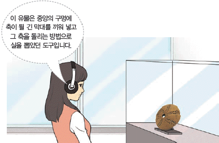
- 거친무늬 거울을 사용하였다.
- 주로 동굴이나 막집에서 살았다.
- 빗살무늬 토기에 식량을 저장하였다.
- 철제 농기구를 이용하여 농사를 지었다.
- 거푸집을 활용하여 청동기를 제작하였다.
(정답률: 89%)

2. 다음 자료에 해당하는 나라에 대한 설명으로 옳은 것은? [2점]
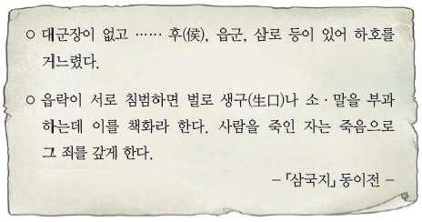
- 12월에 영고라는 제천 행사를 열었다.
- 여러 가(加)들이 별도로 사출도를 다스렸다.
- 제가 회의에서 국가의 중대사를 결정하였다.
- 특산물로 단궁, 과하마, 반어피 등이 있었다.
- 제사장인 천군과 신성 지역인 소도가 존재하였다.
(정답률: 76%)
3. (가)~(다)를 일어난 순서대로 옳게 나열한 것은? [3점]
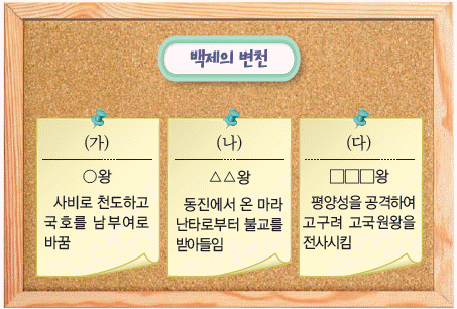
- (가) - (나) - (다)
- (가) - (다) - (나)
- (나) - (가) - (다)
- (나) - (다) - (가)
- (다) - (나) - (가)
(정답률: 59%)
4. (가) 인물의 활동으로 옳은 것은? [2점]
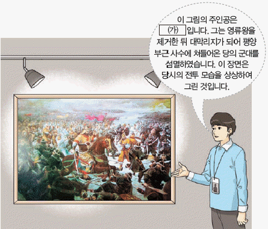
- 강동 6주를 획득하였다.
- 동북 9성을 개척하였다.
- 당의 등주를 공격하였다.
- 신라의 대야성을 빼앗았다.
- 천리장성 축조를 주관하였다.
(정답률: 65%)
5. 다음 검색창에 들어갈 문화유산으로 옳은 것은? [1점]
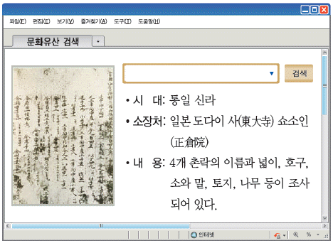
- 지계
- 홍패
- 공명첩
- 청금록
- 민정 문서
(정답률: 80%)
6. (가) 왕의 업적으로 옳은 것은? [3점]
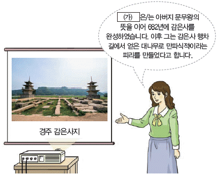
- 이사부를 보내 우산국을 복속시켰다.
- 관료전을 지급하고 녹읍을 폐지하였다.
- 대가야를 정복하여 영토를 확장하였다.
- 이차돈의 순교를 계기로 불교를 공인하였다.
- 관리 선발을 위하여 독서삼품과를 실시하였다.
(정답률: 60%)
7. 밑줄 그은 ‘이 국가’에 대한 설명으로 옳은 것은? [2점]
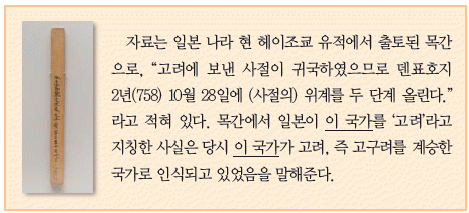
- 전성기에 해동성국이라 불렸다.
- 전국을 5도 양계로 나누어 다스렸다.
- 9서당 10정의 군사 조직을 갖추었다.
- 나·당 연합군의 공격으로 멸망하였다.
- 지방관 감찰을 위해 외사정을 파견하였다.
(정답률: 78%)
8. 다음 퀴즈의 정답으로 옳은 것은? [2점]
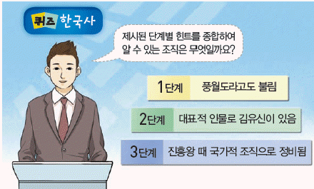
- 도방
- 중방
- 별기군
- 화랑도
- 속오군
(정답률: 90%)
9. 밑줄 그은 ‘그’에 대한 설명으로 옳은 것은? [2점]
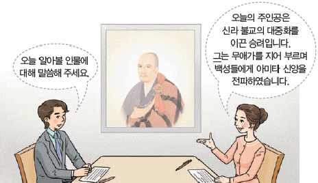
- 십문화쟁론을 저술하였다.
- 화엄일승법계도를 지었다.
- 해동 천태종을 개창하였다.
- 수선사 결사를 제창하였다.
- 유불 일치설을 주장하였다.
(정답률: 49%)
10. 다음 답사 지역을 지도에서 옳게 찾은 것은? [2점]
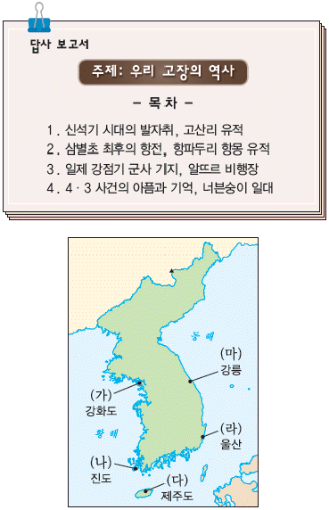
- (가)
- (나)
- (다)
- (라)
- (마)
(정답률: 72%)
11. (가)~(라)에 대한 설명으로 옳은 것을 <보기>에서 고른 것은? [2점]
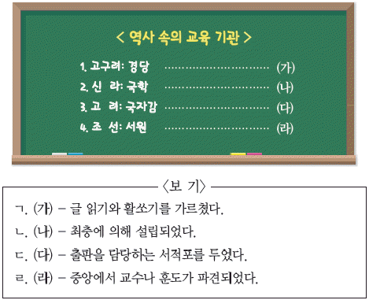
- ㄱ, ㄴ
- ㄱ, ㄷ
- ㄴ, ㄷ
- ㄴ, ㄹ
- ㄷ, ㄹ
(정답률: 54%)
12. (가) 인물의 활동에 대한 설명으로 옳은 것은? [2점]
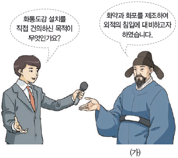
- 4군 6진을 개척하였다.
- 위화도에서 회군하였다.
- 나선 정벌에 참여하였다.
- 처인성 전투에서 활약하였다.
- 진포 대첩에서 왜구를 격퇴하였다.
(정답률: 69%)
13. 다음 가상 뉴스에서 소개하고 있는 책에 대한 설명으로 옳은 것은? [2점]
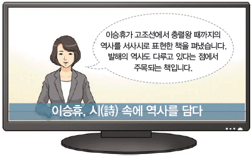
- 기전체 형식으로 서술되었다.
- 단군에 관한 내용이 기록되어 있다.
- 남북국이라는 용어를 처음 사용하였다.
- 유네스코 세계 기록 유산으로 등재되었다.
- 신라의 역사를 상대, 중대, 하대로 구분하였다.
(정답률: 49%)
14. 교사의 질문에 대한 학생의 답변으로 옳은 것은? [2점]
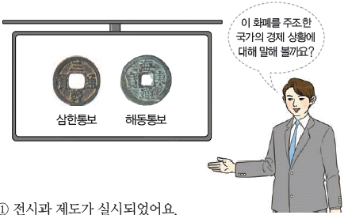
- 전시과 제도가 실시되었어요.
- 왜관 개시를 통해 인삼이 수출되었어요.
- 덕대가 광산을 전문적으로 경영하였어요.
- 담배, 고추 등의 상품 작물이 재배되었어요.
- 청해진을 중심으로 해상 무역이 전개되었어요.
(정답률: 45%)
15. 다음 상황이 나타난 시기를 연표에서 옳게 고른 것은? [3점]
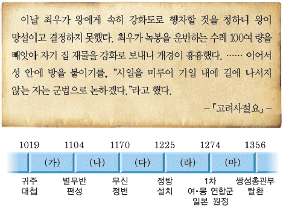
- (가)
- (나)
- (다)
- (라)
- (마)
(정답률: 41%)
16. 다음 명령에 따라 시행된 정책에 대한 설명으로 옳은 것은? [1점]
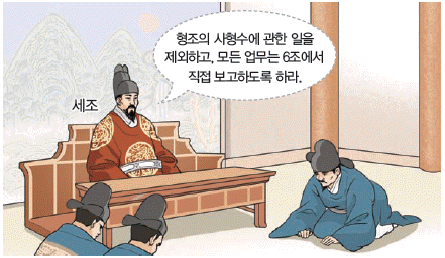
- 공인이 등장하는 계기가 되었다.
- 왕권 강화를 목적으로 시행되었다.
- 후주 출신 쌍기의 건의로 도입되었다.
- 국정과 왕실 사무의 분리를 가져왔다.
- 붕당 간 대립을 배경으로 실시되었다.
(정답률: 79%)
17. 다음 가상 광고에 나타난 민속놀이로 옳은 것은? [2점]
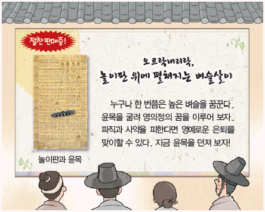
- 윷놀이
- 고누놀이
- 차전놀이
- 승경도놀이
- 놋다리밟기
(정답률: 45%)
18. 다음 검색창에 들어갈 책에 대한 설명으로 옳은 것은? [2점]
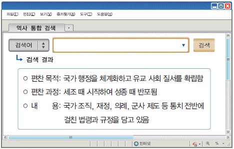
- 6전 체제로 구성되었다.
- 경·율·론 3장을 모아 정리하였다.
- 역대 전쟁에 관한 기록을 체계화하였다.
- 수시력과 회회력 등을 바탕으로 만들어졌다.
- 효자, 충신, 열녀의 모범 사례를 제시하였다.
(정답률: 46%)
19. (가)~(마)에 들어갈 내용으로 옳지 않은 것은? [2점]
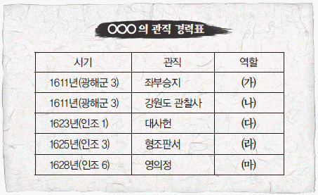
- (가) - 왕명의 출납을 담당하였다.
- (나) - 군현의 수령을 감독하였다.
- (다) - 재정의 출납과 회계를 맡았다.
- (라) - 형벌에 관한 일을 주관하였다.
- (마) - 국정 전반을 총괄하였다.
(정답률: 57%)
20. (가)~(라)에 들어갈 내용으로 적절한 것을 <보기>에서 고른 것은? [3점]
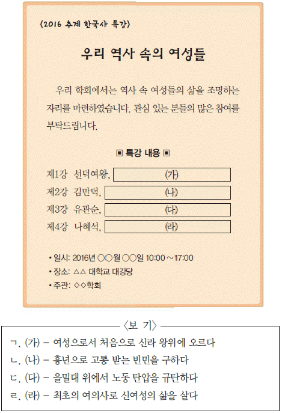
- ㄱ, ㄴ
- ㄱ, ㄷ
- ㄴ, ㄷ
- ㄴ, ㄹ
- ㄷ, ㄹ
(정답률: 74%)
21. (가)에 들어갈 용어로 옳은 것은? [1점]
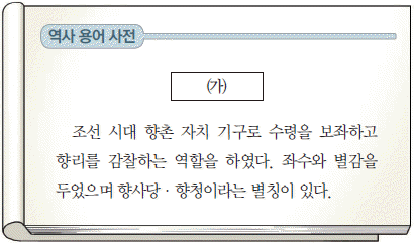
- 상평창
- 성균관
- 유향소
- 도병마사
- 전민변정도감
(정답률: 82%)
22. 다음과 같은 과정을 거쳐 제작된 책에 대한 설명으로 옳은 것은? [2점]
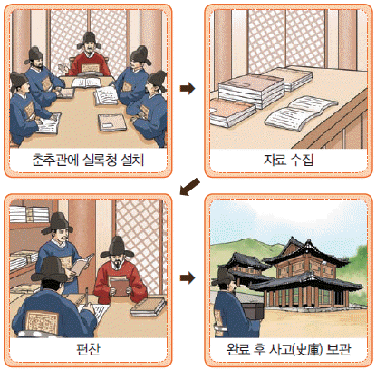
- 세가, 지, 열전 등으로 구성되었다.
- 시정기와 사초를 바탕으로 제작되었다.
- 현존하는 우리나라 최고(最古)의 역사서이다.
- 불교사 중심으로 고대 민간 설화 등을 수록하였다.
- 고조선부터 고려 말까지의 역사를 편년체로 서술하였다.
(정답률: 39%)
23. 밑줄 그은 ‘이 법’에 대한 설명으로 옳은 것은? [3점]
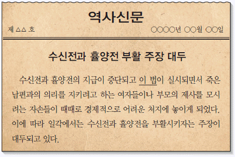
- 현직 관리에게만 수조권을 지급하였다.
- 노동력의 징발을 법적으로 보장하였다.
- 인품과 공로를 토지 지급 기준으로 삼았다.
- 부족한 재정을 보충하기 위해 결작을 부과하였다.
- 선혜법이라는 이름으로 경기도에서 처음 시행되었다.
(정답률: 62%)
24. 다음 인물 카드의 주인공으로 옳은 것은? [1점]
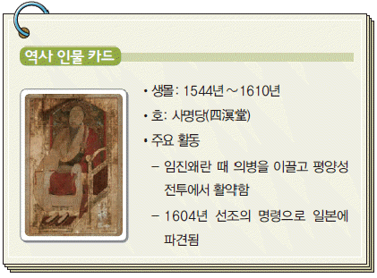
- 도선
- 의천
- 의상
- 유정
- 지눌
(정답률: 41%)
25. 밑줄 그은 ‘정치 상황’에 대한 설명으로 옳은 것은? [2점]
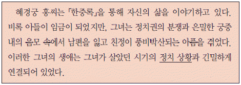
- 벽파와 시파의 대립이 심화되었다.
- 왕권 강화를 위해 비변사가 혁파되었다.
- 자의 대비의 복상 기간을 둘러싼 예송이 발생하였다.
- 조의제문의 내용이 빌미가 되어 무오사화가 일어났다.
- 이조 전랑 임명을 둘러싸고 사림이 동인과 서인으로 나뉘었다.
(정답률: 29%)
26. (가)에 들어갈 역사 용어로 옳은 것은? [2점]
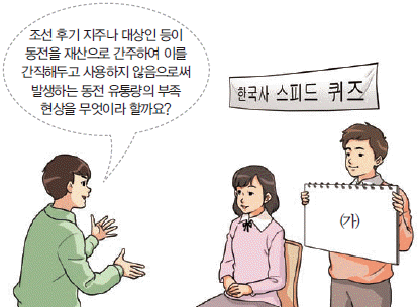
- 광작
- 방납
- 잠채
- 전황
- 향전
(정답률: 51%)
27. (가), (나) 종교에 대한 설명으로 옳은 것은? [1점]
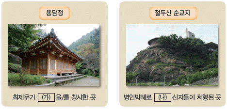
- (가) - 중광단 결성을 주도하였다.
- (가) - 조상에 대한 제사를 거부하였다.
- (나) - 기관지로 만세보를 발간하였다.
- (나) - 교리를 정리한 동경대전을 경전으로 삼았다.
- (가), (나) - 사교(邪敎)라는 이유로 정부 탄압을 받았다.
(정답률: 64%)
28. 다음 수행평가 보고서의 제목으로 적절한 것을 <보기>에서 고른 것은? [2점]
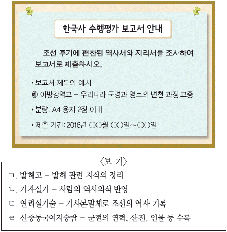
- ㄱ, ㄴ
- ㄱ, ㄷ
- ㄴ, ㄷ
- ㄴ, ㄹ
- ㄷ, ㄹ
(정답률: 39%)
29. (가)에 대한 설명으로 옳은 것을 <보기>에서 고른 것은? [3점]
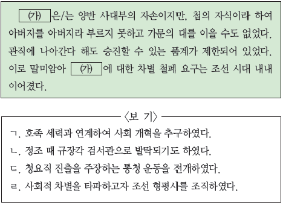
- ㄱ, ㄴ
- ㄱ, ㄷ
- ㄴ, ㄷ
- ㄴ, ㄹ
- ㄷ, ㄹ
(정답률: 40%)
30. 다음 퀴즈의 정답으로 옳은 것은? [2점]
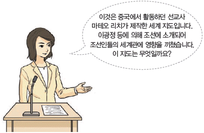
(정답률: 54%)
31. (가), (나)에 들어갈 내용으로 옳은 것은? [3점]
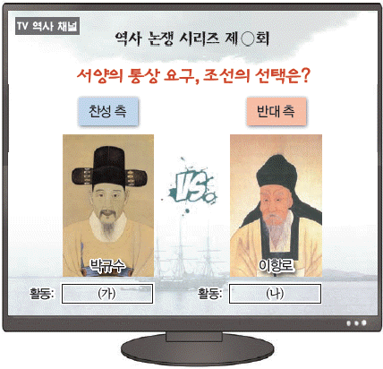
- (가) - 북학의를 저술하였다.
- (가) - 갑신정변에 참여하였다.
- (나) - 척화주전론을 내세웠다.
- (나) - 삼정이정청 설치를 주장하였다.
- (가), (나) - 항일 의병장으로 활약하였다.
(정답률: 51%)
32. 밑줄 그은 ‘이 조치’에 대한 탐구 활동으로 가장 적절한 것은? [2점]
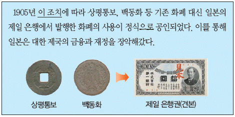
- 보안회 설립의 목적을 파악한다.
- 재정 고문 메가타의 활동을 조사한다.
- 묄렌도르프의 내정 간섭 결과를 찾아본다.
- 동양 척식 주식회사의 주요 업무를 알아본다.
- 독립 협회의 이권 수호 운동 과정을 살펴본다.
(정답률: 64%)
33. (가), (나) 조약에 대한 설명으로 옳은 것을 <보기>에서 고른 것은? [2점]
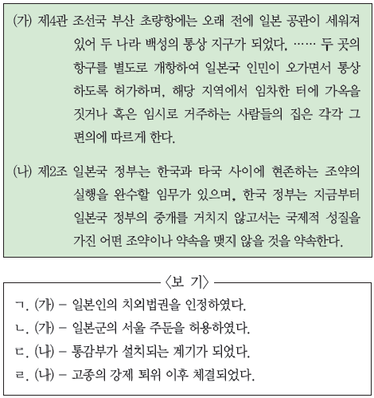
- ㄱ, ㄴ
- ㄱ, ㄷ
- ㄴ, ㄷ
- ㄴ, ㄹ
- ㄷ, ㄹ
(정답률: 55%)
34. (가)에 들어갈 주제로 가장 적절한 것은? [1점]
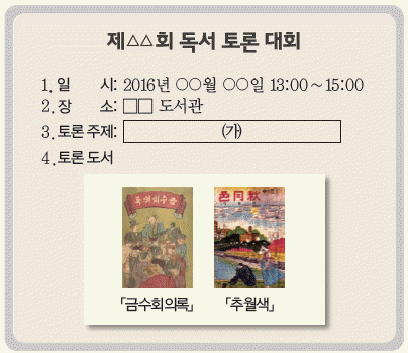
- 신소설의 유행
- 동문학의 성과
- 패관 문학의 등장
- 조선학 운동의 전개
- 신경향파 문학의 특징
(정답률: 51%)
35. (가)~(다) 지역에서 있었던 사실로 옳은 것은? [3점]
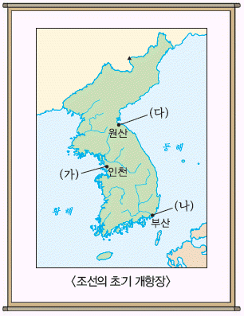
- (가) - 전차가 처음으로 운행되었다.
- (가) - 서양식 병원인 광혜원이 세워졌다.
- (나) - 최초의 철도가 부설되었다.
- (나) - 박문국에서 한성순보가 발행되었다.
- (다) - 최초의 근대식 학교가 설립되었다.
(정답률: 51%)
36. 다음 법령이 시행된 시기에 볼 수 있는 모습으로 적절한 것은? [2점]
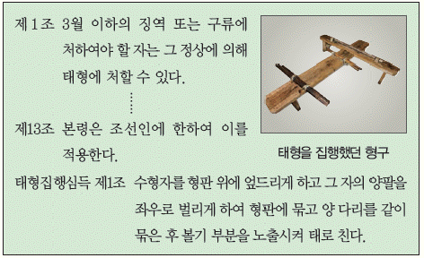
- 황국 신민 서사를 암송하는 학생
- 조선인의 집회를 단속하는 헌병 경찰
- 농촌 진흥 운동을 홍보하는 총독부 관리
- 치안 유지법 위반으로 구속된 독립운동가
- 국민 징용령에 따라 탄광으로 강제 동원되는 노동자
(정답률: 71%)
37. (가)에 들어갈 내용으로 가장 적절한 것은? [1점]
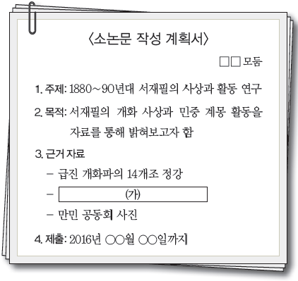
- 정우회 선언
- 의열단 행동 지침
- 독립신문 창간 논설
- 조선 물산 장려회 조직도
- 13도 창의군 의병장 명단
(정답률: 61%)
38. (가)에 들어갈 내용으로 가장 적절한 것은? [2점]
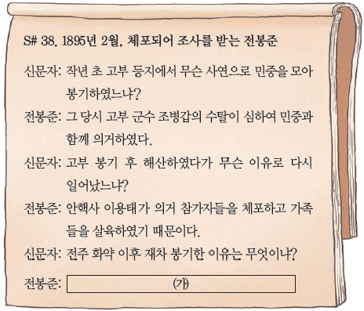
- 러시아가 절영도 조차를 요구하였기 때문이다.
- 영국이 거문도를 불법으로 점령하였기 때문이다.
- 프랑스가 병인박해를 구실로 침략하였기 때문이다.
- 청이 흥선 대원군을 톈진으로 압송해 갔기 때문이다.
- 일본군이 경복궁을 공격하고 임금을 위협하였기 때문이다.
(정답률: 63%)
39. (가) 민족 운동에 대한 설명으로 옳은 것은? [2점]
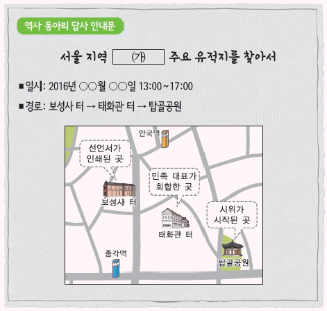
- 내 살림 내 것으로 등의 구호를 내세웠다.
- 서상돈, 김광제 등의 발의로 본격화되었다.
- 일제가 문화 통치를 실시하는 계기가 되었다.
- 순종의 인산일에 학생들의 주도로 전개되었다.
- 한국인 학생과 일본인 학생 간의 충돌이 발단이 되었다.
(정답률: 65%)
40. 다음 자료에 나타난 일제의 정책이 시행된 시기를 연표에서 옳게 고른 것은? [2점]
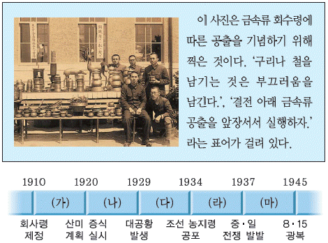
- (가)
- (나)
- (다)
- (라)
- (마)
(정답률: 54%)
41. (가)에 들어갈 제목으로 가장 적절한 것은? [2점]
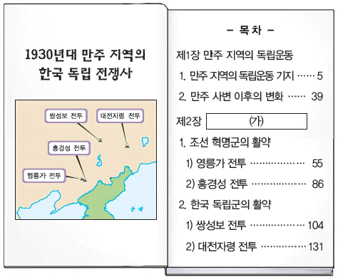
- 조선 건국 동맹의 활동
- 한·중 연합 작전의 전개
- 대한민국 임시 정부의 군제
- 조선 독립 동맹의 무장 투쟁
- 대조선 국민군단의 군사 훈련
(정답률: 49%)
42. 다음 자료와 관련된 사회 운동에 대한 설명으로 옳은 것은? [2점]
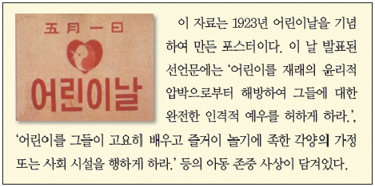
- 방정환, 김기전 등이 주도하였다.
- 개간 사업과 저축 운동을 장려하였다.
- 통감부의 방해와 탄압 등으로 실패하였다.
- 대구에서 시작되어 전국적으로 확산되었다.
- 식민지 교육에 반대하며 동맹 휴학을 전개하였다.
(정답률: 78%)
43. (가)에 들어갈 내용으로 옳은 것은? [2점]
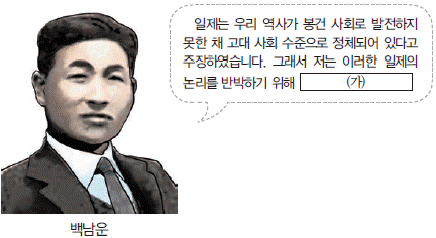
- 진단 학회를 창립하였습니다.
- 조선사 편수회에 참여하였습니다.
- 조선사회경제사를 저술하였습니다.
- 한국독립운동지혈사를 집필하였습니다.
- 대한매일신보에 독사신론을 연재하였습니다.
(정답률: 49%)
44. 선생님의 질문에 대한 학생의 답변으로 옳은 것은? [3점]
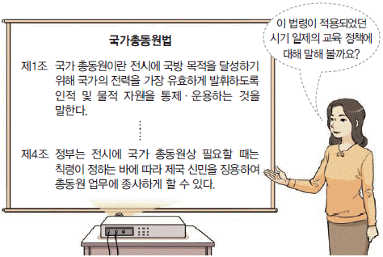
- 사립 학교 규칙을 제정하였어요.
- 경성 제국 대학을 설립하였어요.
- 소학교를 국민학교로 개칭하였어요.
- 조선어를 필수 과목으로 채택하였어요.
- 보통학교의 수업 연한을 4년으로 정하였어요.
(정답률: 51%)
45. (가) 단체에 대한 설명으로 옳은 것은? [2점]
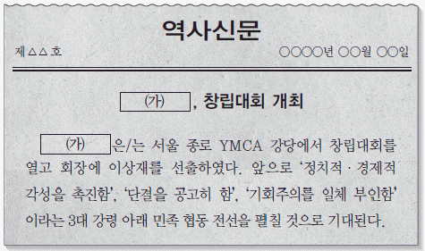
- 1⑤인 사건으로 해산되었다.
- 삼원보에 신흥 무관 학교를 설립하였다.
- 비밀 행정 조직으로 연통제를 실시하였다.
- 각국에 국제법상 교전 단체로 승인해줄 것을 요구하였다.
- 광주 학생 항일 운동 당시 현지에 진상 조사단을 파견하였다.
(정답률: 43%)
46. 다음 자료에 해당하는 인물의 활동으로 옳은 것은? [1점]
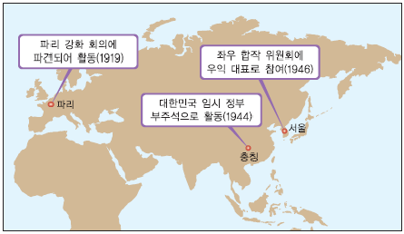
- 자유당을 창당하였다.
- 남북 협상에 참여하였다.
- 한인 애국단을 조직하였다.
- 조선 의용군을 창설하였다.
- 민립 대학 설립 운동을 추진하였다.
(정답률: 40%)
47. (가)에 해당하는 국제 회의로 옳은 것은? [1점]
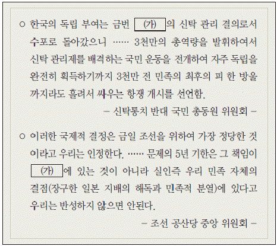
- 얄타 회담
- 카이로 회담
- 포츠담 회담
- 헤이그 만국 평화 회의
- 모스크바 3국 외상 회의
(정답률: 65%)
48. (가), (나) 사이 시기의 경제 상황에 대한 설명으로 옳은 것은? [2점]
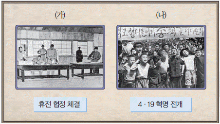
- 건설업체의 중동 진출이 본격화되었다.
- 저유가, 저금리, 저달러의 3저 호황이 있었다.
- 제분, 제당, 면방직의 삼백 산업이 성장하였다.
- 투명한 금융 거래를 위한 금융 실명제가 실시되었다.
- 개성 공단 건설을 통해 남북 간 경제 교류가 이루어졌다.
(정답률: 61%)
49. 다음과 같이 개원한 국회가 운영되었던 시기의 정치 상황으로 옳은 것은? [3점]
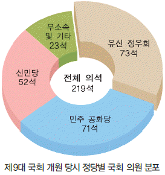
- 3선 개헌안이 통과되었다.
- 4·13 호헌 조치가 발표되었다.
- 대통령의 긴급 조치권이 발동되었다.
- 지방 자치제가 전면적으로 실시되었다.
- 반민족 행위 특별 조사 위원회가 활동하였다.
(정답률: 46%)
50. 다음 경축사를 발표한 정부 시기의 통일 노력으로 옳은 것은? [2점]
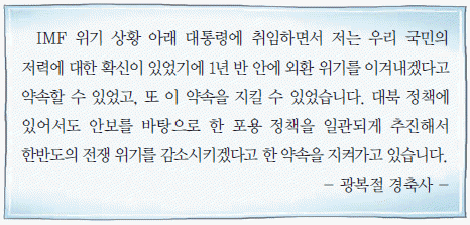
- 남북 기본 합의서를 채택하였다.
- 남북 조절 위원회를 설치하였다.
- 민족 공동체 통일 방안을 발표하였다.
- 최초로 남북 정상 회담을 개최하였다.
- 처음으로 이산가족 고향 방문을 성사시켰다.
(정답률: 51%)